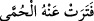
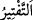
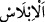
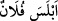

“Azapları hafifletilmeyecek” ve eksiltilmeyecek “tir.” Bu ifâde Arapların “__WORD__/feterat anhü’l-hummâ”; yani sıtma ondan biraz hafifledi, sözünden
alınmıştır. Sıtma biraz sükûnet bulup ateşi düştüğü zaman böyle denilir. Dolayısıyla bu
terkip, zayıflık ve gevşemeyi ifâde içindir. Râgıb şöyle demiştir: “__WORD__/fetr”; hiddetten
sonra olan sükûn, şiddetten sonra olan yumuşaklık ve kuvvetten sonra olan zayıflık
demektir. “__WORD__/teftîr” ise gevşeklik göstermek demektir.
“Onlar
azap
içinde
kurtuluştan”
râhattan,
cezâlarının
ve
azaplarının
hafifletilmesinden “ümid kemişlerdir!”
Şöyle denilmiştir: Mücrim kâfir ateşten bir sanduka içerisine konulur, sonra bu
sanduka kapatılır. Bu kişi burada kimseyi göremez. Hiç kimse tarafından da görülemez.
Orada sonsuza dek kalır.
Tacü’l-Masadir’de şöyle denilmiştir: “__WORD__/iblâs” kırılmak, ümidsiz ve gamlı olmak
demektir.
Müfredât’ta şöyle denilmiştir: “İblâs” aşırı ümidsizlikten meydana gelen üzüntüdür.
İblis kelimesi de bu kökten türemiştir. Bir de “müblis” yani aşırı ümidsiz olan kimse,
tam bir suskunluk içinde olup maksûd olanı unutur. Kişi susup bütün huccet ve delilleri
kesilince “__WORD__/eblese fülân” denilir.
et-Te’vilâtü’n-Necmiyye’ de belirtildiğine göre âyette şuna işâret edilmektedir:
Tevhîd ehli olanlardan bir kısmı, günahları sebebiyle cehenneme düşseler bile, orada
ebedî kalmayacaklardır. Hitab deliliyle onların azapları hafifletilip zamanla son
bulacaktır. Haberde şöyle gelmiştir: “Allah Teâlâ günahları sebebiyle cehenneme düşen
müminleri cehennemden çıkıncaya kadar orada geçici bir ölümle öldürecektir.” Ölü ise
zaten acı ve azâbı hissetmeyecektir. Âyette onların tamamen ümid kestikleri
zikredilmiştir. Yani bunlar tam bir haybet ve hüsrân içindedirler, demektir ki bu
kâfirlerin sıfatıdır. Müminlere gelince onlar her ne kadar kâfirlerin düşmüş oldukları
cehennem belâsına düşmüş iseler de Allah’ın rahmetinden ümid kesmemişler, artık
hüzün ve azaplarının biteceği günleri saymaktadırlar.
Meşâyihten bazıları şöyle demiştir: Müminlerin cehennemdeki durumu, onların
dünyadaki durumlarına nispetle kalplerini rahatlatıcı bir durumdur. Çünkü artık gün,
helâk ve hüsrân günüdür. Müminlerin cehennemdeki böyle ümidvâr oluşları, onların
kurtuluşlarına yardımcıdır.
Şâir şöyle demiştir: Selâmet ve kurtuluşun aybı, kurtuluş sâhibinin belini kıracak
musîbetler bekliyor olmasıdır. Musîbetin fazîleti ise onu, zamanın geçmesi ve son
ümidin bekliyor olmasıdır.
Yakınlıkta bütünüyle zevâl korkusu vardır,
Uzaklıkta ise visâl ümidinden başka bir şey yoktur.